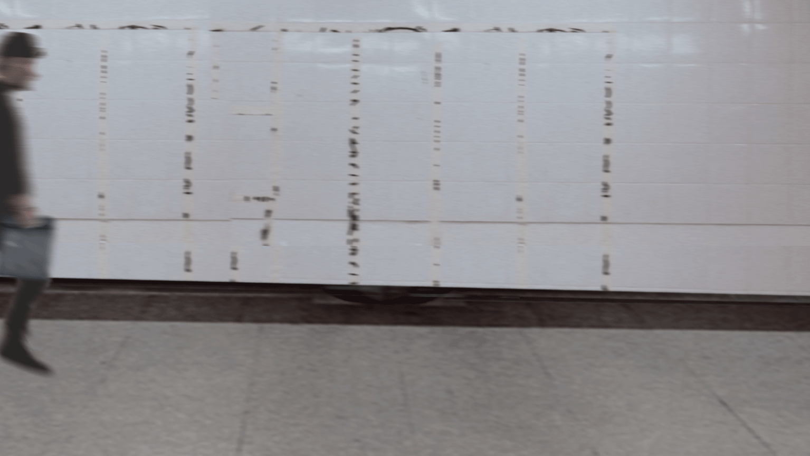
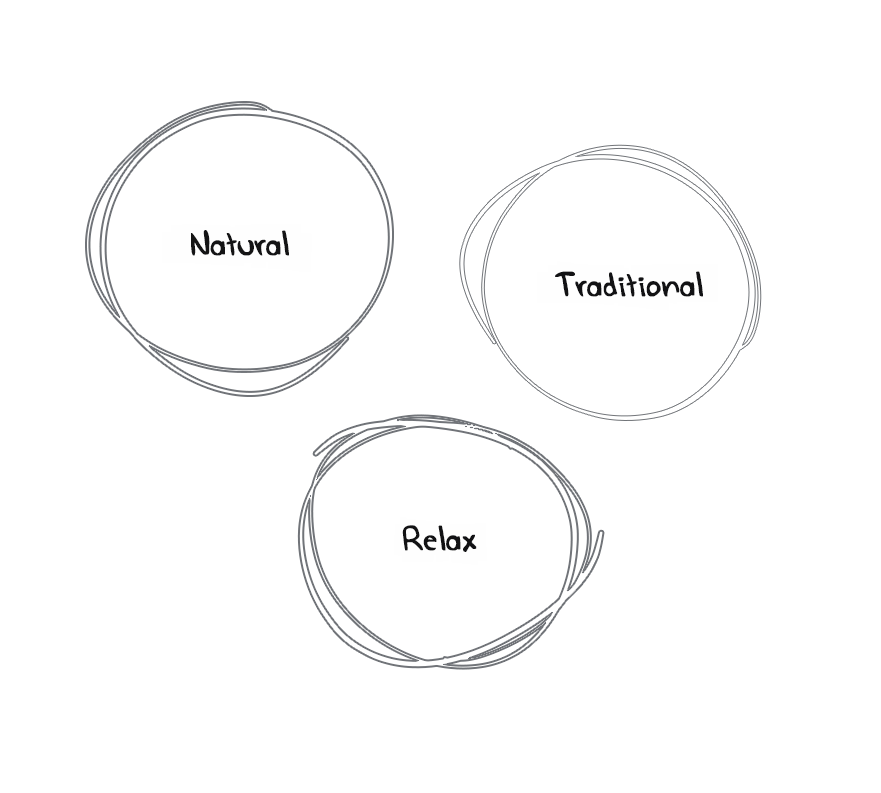
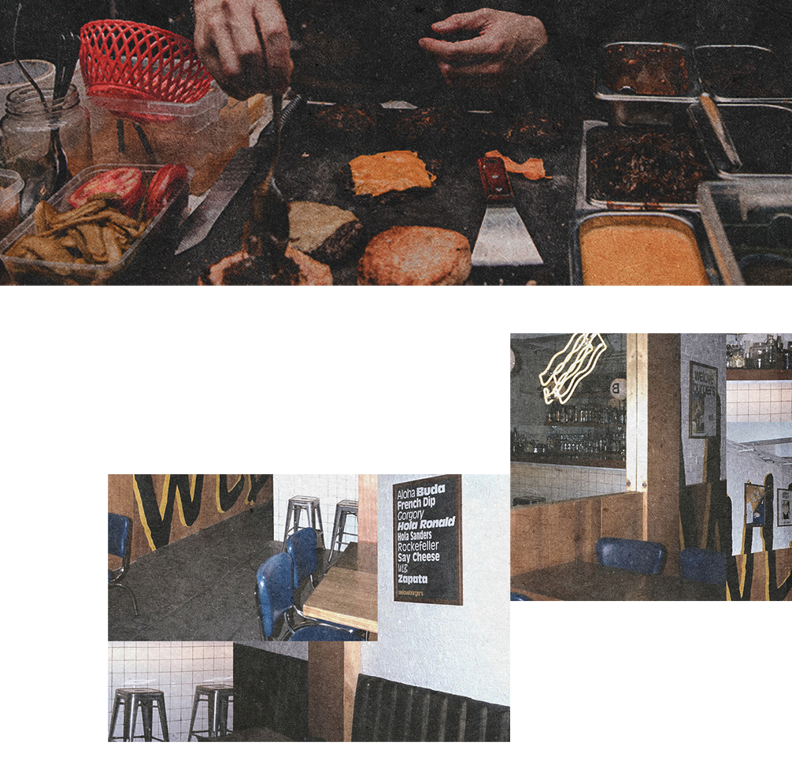

Design Context
The Story
The shop owner, who is South African Tribe people living in the UK, started as a hamburger restaurant at Arsenal Riverside after moving to London Wembley community. His own handmade patties are marinated with South African tribe spices. The client needed a fresh brand identity to convey to customers the pleasurable experience between traditional rustic taste and community.
Brand Logo and Value

chatShop Owner :
"Actually, my burger sauces and spices are the key, which are made by the cooking method of my country. hmmm..... I wanna say open only at night. Having said that, compared with other competing burger houses, this may be our biggest difference." 
Ideating the Brand Personality
Determine values and message align the brand story
Logomark
The South African tribal mask is one of the most important elements. The fluidity of the line movements served as a great inspiration when designing the brand's logo. So the main idea of the logo was to mix the tribe mask and the burger outline, creating a casual and fluid hand-sketched outline that evokes the natural, organic and carefree ethos of the brand. Building a personality within the brand logo while still appealing to community people interested in consuming the burger in a traditional South African spice.
Building a personality within the brand logo while still appealing to community people interested in consuming the burger in a traditional South African spice.
Logotype
The brand name "2nd" comes from "starting a new day at night". The closely letters of "2nd" are connected and fused into a strong symbol that is contrasting with logomark outline, which embodies this initial concept through the message of "Serving at night people after work".
Typography and Color Palette
The alternation of the two fonts gives the brand a carefree and reliable feel. The colour palette also supports the overall mood of the project. I want to convey "time" as a direct reference to the original concept: a timeless black and white colour combination portrays it's presented night and day transitions, and night blue as a sub-colour. The kraft texture applied to mix different visual base elements.
Establishing the Brand Recognition
Drive higher value via enhance the brand identity
Visual
Element
The five types of burger ingredients symbol are the elements that support the 2nd Burger as a whole. I was inspired by various South African spices of the burger was essential in establishing the brand visual by hand sketch of auxiliary symbol and pattern, which are used for menus, packaging, label and decorative areas of the burger house. This creates a sense of brand cognitive of natural, coherence and signature.
Branding
Design Assets
Campaign Materials
As a crucial campaign touchpoint, the social media platforms and road advertisement were used to quickly build community awareness of 'Handmade Burgers with South African Spices', and the brand spirit stood out among community burger joints. All of this visually communicated the brand message in an approachable way.
Outcome
In the end, the rebranding played a key role in catching the eye of the London community by significantly increasing new customer acquisition while improving 2nd burger house popularity.
As my freelance design project, I’m proud of accomplishments in 3 weeks and the successful launch of the campaigns shortly after the handover.